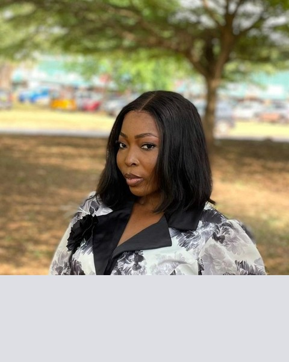
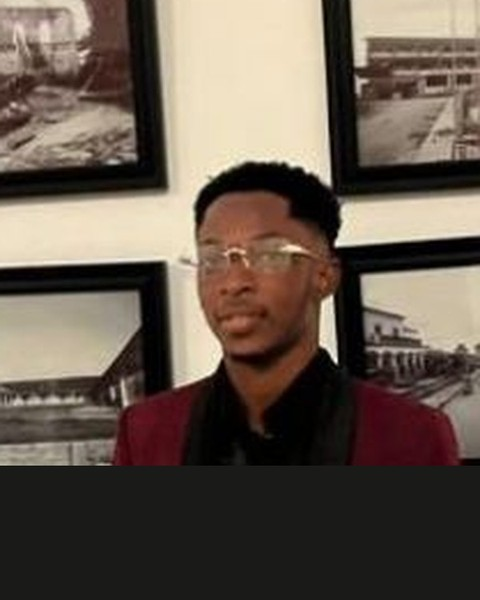
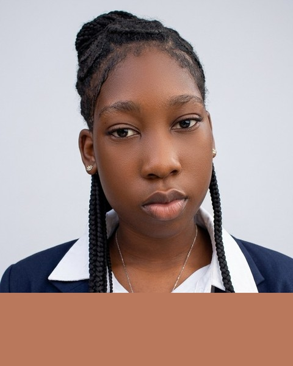
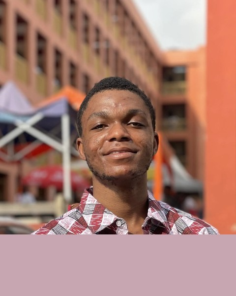

Dr. Zari Martey
Executive Director
Our Identity
Driven by purpose. Rooted in community. Committed to water for all.
Our History
Calistos Oasis Development was founded in 2013 by a group of Ghanaian engineers, public-health professionals, and community advocates who saw firsthand the devastating toll that water insecurity was taking on rural families. Starting with a single borehole in the Brong-Ahafo Region, our organisation has grown into a nationally recognised force for water justice.
Over twelve years, we have expanded across eight regions, partnering with local governments, international donors, and most importantly, the communities we serve. Our work is guided by the principle that lasting change comes from within — we train, equip, and trust local people to own and maintain their water systems.
A Ghana where every person, in every community, has dignified access to safe water and adequate sanitation.
To deliver sustainable water, sanitation, and hygiene solutions through community-centred partnerships and innovation.
Core Values
Why We Exist
Approximately 4.2 million Ghanaians still lack access to basic drinking water services. In rural communities, women and girls bear the majority of the burden — walking up to 10 kilometres daily to collect water that is often unsafe. Waterborne diseases remain a leading cause of child mortality.
We exist to close this gap — not just by drilling boreholes, but by transforming entire communities' relationships with water through education, governance structures, and ongoing technical support.
Leadership
Passionate professionals united by a single goal — water for every Ghanaian.




Our Goals

Increase the proportion of underserved Ghanaians with reliable access to safe drinking water by installing 50 new community water points by 2027.

Ensure every school in our operational zones has fully functioning, gender-inclusive sanitation facilities and hygiene education curricula.

Train 50,000 community members in evidence-based hygiene practices, reducing waterborne disease incidence by 60% in target communities.

Transition all new water infrastructure to solar-powered pumping systems, eliminating fuel costs and reducing our carbon footprint to near zero.

Establish Water and Sanitation Management Committees in every community we serve to ensure long-term maintenance and sustainability of systems.

Deploy real-time water quality monitoring sensors across all our installations to track performance, detect failures early, and publish open data.